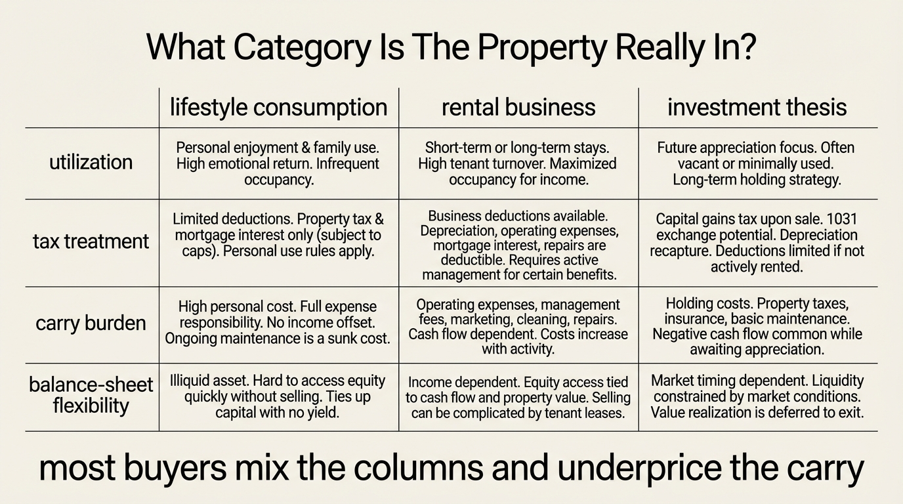

The Second-Home Wealth Drain
Second homes are marketed with a flattering blend of logic. They promise lifestyle, inflation protection, family memory, and long-run appreciation in one purchase. That narrative hides the actual economics. A second home is often a duplicated household operating system with weaker utilization, higher friction, and far less tax efficiency than buyers assume. Many households do not buy a second appreciating asset. They buy a second carry stack.
Established fact: buying a second home duplicates property taxes, insurance, utilities, maintenance, furnishing, reserve needs, and transaction costs. Established fact: tax treatment is narrower than many buyers assume, especially when the property mixes personal use with limited rental income or when deduction caps are already binding. Established fact: the same capital could otherwise reduce primary-home debt, increase liquid reserves, or compound in diversified financial assets with lower operating friction. The implication is not that second homes are always irrational. It is that buyers often underwrite them as investment assets when they behave mostly as consumption assets with financing attached.
Core thesis: the second-home wealth drain appears when a household prices the upside like an appreciating asset but carries the downside like a small business, a hotel, and a primary residence at the same time. The drain is usually not one expense. It is the interaction of duplicated fixed costs, underuse, tax friction, opportunity cost, and reduced flexibility.

Why The Underwriting Usually Starts Wrong
The first mistake is category error. Buyers tend to mix lifestyle and investment language without separating them. If the property is mainly a place the household wants to use, the right comparison is not a clean investment return series. It is the cost of owning that lifestyle versus renting access to it. If the property is mainly an investment, then occupancy flexibility, personal-use restrictions, management burden, vacancy risk, and tax treatment need to be modeled the way one would model any income property. Many second-home purchases do neither. They rely on appreciation optimism while keeping the usage pattern and operating design of a discretionary consumption good.
The second mistake is utilization blindness. A primary home may justify a large fixed-cost base because it is used continuously. A second home often sits idle for most of the year while still consuming taxes, insurance, climate control, preventive upkeep, and travel overhead. Sparse occupancy matters because the carrying cost per night of actual use can be far higher than buyers estimate at purchase. A house used twenty or thirty nights a year is not just a property. It is a low-utilization asset with hotel-like usage and owner-like obligations.
The third mistake is that appreciation stories dominate visible memory. Buyers remember the few examples where a vacation market doubled. They rarely compute the years of tax, furnishing, maintenance, transaction spread, weather exposure, and idle capital that sat underneath the gain. This is the same accounting problem behind The Hidden Costs of Ownership. The asset is priced optimistically while the carrying system is priced superficially.
Tax Logic Is Narrower Than The Sales Pitch
Second-home tax treatment sounds generous until the rules are read carefully. Mortgage interest can be deductible only within the qualified-residence framework and within current debt limits. State and local tax deductions are already capped, which means a second property tax bill often adds real cash cost without adding equivalent federal relief. If the home is rented out for meaningful periods, expense allocation and personal-use thresholds matter. Once personal use exceeds the IRS vacation-home limits, the property does not behave like a straightforward business asset for deduction purposes.
This matters because many purchase narratives quietly assume that the tax code will soften the carry. For a household that already maxes out deduction caps or does not itemize in a way that changes the result materially, the tax benefit may be weaker than expected. At that point the cash economics revert to what they always were: debt service, reserves, operating cost, and opportunity cost.
Financing rules also matter. Agency guidance for second homes is not identical to primary-residence treatment. Occupancy, distance, exclusivity of use, and non-rental assumptions affect what counts as a true second home. Once the property behaves more like an investment rental, financing and underwriting assumptions can change. Buyers who treat the property as an all-purpose asset often discover that lenders and tax authorities do not share that flexibility.
The Real Drain Is Optionality Loss
Household wealth is not only about gross asset value. It is also about freedom of movement when conditions change. A second home can reduce that freedom in several ways at once. It ties up down-payment capital. It increases fixed monthly obligations. It creates another property that must be monitored, insured, repaired, and eventually sold or transferred. It can also make a household slower to respond to job changes, family shifts, health shocks, or regional market deterioration.
This is where the topic meets The Asset-Rich, Cash-Poor Paradox and The Liquidity Illusion. A second home can raise nominal net worth while lowering practical resilience. In a strong market the owner feels richer. In a stressed market the same owner faces illiquidity, concentrated local housing exposure, and two properties requiring cash at the same time. The nominal wealth signal improves just as the balance-sheet flexibility worsens.
There is also a subtler drag. The property consumes managerial attention. Insurance renewals, storm preparation, local contractors, utility issues, furnishing cycles, and travel planning all create a governance burden that does not appear in headline return comparisons. For households with demanding careers or limited liquidity buffers, that burden compounds the financial carry with cognitive carry.
What Usually Makes The Math Fail
The first failure point is transaction spread. The Consumer Financial Protection Bureau notes that closing costs alone can run several percentage points of the purchase price. Add furnishing, setup, and future sale costs, and the appreciation hurdle becomes meaningfully higher before any real wealth is created.
The second failure point is episodic large expenses. Roofs, exterior work, HVAC, septic systems, flood mitigation, wildfire hardening, deferred maintenance, and local code changes arrive irregularly, which lets buyers treat them as bad luck rather than as embedded economics. A second home in a seasonal or climate-exposed location can carry especially uneven expense timing.
The third failure point is pseudo-rental thinking. Some owners assume short-term rental income will neutralize the carry while preserving private access. In practice, meaningful rental economics require occupancy, management, cleaning, compliance, furnishing durability, pricing work, and acceptance that guest demand may conflict with the owner's preferred use calendar. Once the owner uses the property too often, the economics and tax treatment can both weaken. The result is often the worst combination: not enough rental income to behave like an investment property and too much operating complexity to behave like simple personal consumption.

When A Second Home Can Still Be Rational
- High utilization. The household expects enough real use that renting the same access repeatedly would be structurally expensive or impractical.
- Balance-sheet surplus. The purchase does not materially reduce liquidity, debt flexibility, retirement savings, or primary-residence resilience.
- Clear category choice. The owner treats the property as lifestyle consumption, rental business, or long-horizon strategic holding, not all three at once.
- Stress-tested carry. The household can absorb weak rental periods, insurance repricing, property-tax growth, and repair shocks without depending on appreciation.
- Exit realism. The owner understands that selling may be slow, seasonal, and expensive, especially when the same market's buyers are all reacting to the same macro conditions.
This is a narrower set of buyers than marketing suggests. The rational buyer is usually not stretching to secure a dream asset. The rational buyer already has enough slack to treat the property as discretionary and still remain robust if the economics disappoint.
Known, Inferred, And Unknown
| Category | Assessment |
|---|---|
| Known | Second homes duplicate major carrying costs including financing, taxes, insurance, utilities, maintenance, furnishing, and transaction drag. |
| Known | Tax benefits are bounded by deduction limits, qualified-residence rules, and vacation-home use tests, so many buyers receive less relief than purchase narratives imply. |
| Known | Low utilization can make the per-night cost of ownership far higher than buyers expect, especially after reserves and sale costs are included. |
| Inferred | For many upper-middle and affluent households, the largest hidden cost is optionality loss rather than any single operating expense line. |
| Unknown | Which local markets will deliver enough future appreciation or rental demand to offset the full carry stack after taxes, insurance repricing, maintenance shocks, and selling friction. |
The Practical Reading For 2026
A second home should usually be underwritten as a consumption asset with uncertain appreciation, not as a reliable wealth engine with lifestyle attached. If the purchase still works under that harsher framing, it may be rational. If it only works when appreciation is assumed, tax relief is maximized, maintenance is minimized, and utilization is idealized, then the household is not buying optionality. It is buying a drain that still feels aspirational.
For WealthMeter readers, the right question is not whether second homes can ever build wealth. They can. The right question is whether this purchase strengthens or weakens the total household system once liquidity, fixed costs, stress tolerance, and opportunity cost are modeled honestly. That is a harder test than lifestyle marketing allows. It is also the correct one.
Further Reading Inside The Site
This article connects directly to The Hidden Costs of Ownership, The Asset-Rich, Cash-Poor Paradox, The Liquidity Illusion, and The Mortgage Lock-In Trap. Together they show why household wealth depends less on nominal asset count than on resilient balance-sheet design.
Source List
Internal Revenue Service. Publication 936: Home Mortgage Interest Deduction. Current rules for qualified residences and mortgage-interest deduction limits.
Internal Revenue Service. Publication 527: Residential Rental Property. Vacation-home personal-use thresholds and allocation rules for mixed personal and rental use.
Internal Revenue Service. IRS Topic no. 503: Deductible taxes. Current federal cap structure and implementation guidance.
Consumer Financial Protection Bureau. Figure out how much home you can afford. Closing-cost guidance and purchase-cost framing for homebuyers.
Consumer Financial Protection Bureau. What is a Closing Disclosure?. Required cost disclosure framework for mortgage closings.
Fannie Mae Selling Guide. Occupancy Types. Agency criteria distinguishing principal residence, second home, and investment property.